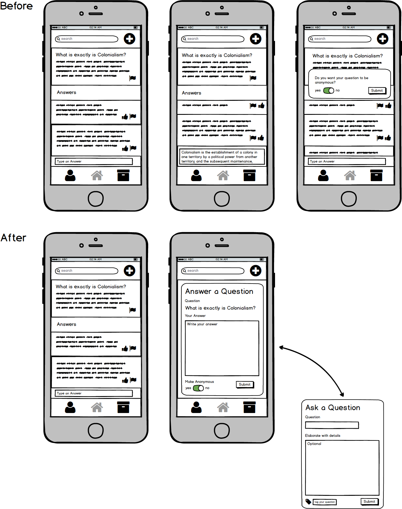

Because Wellesley boasts a diverse community,
we acknowledge that incoming students will come
in with varying backgrounds on social and political topics.
However, the community right now doesn’t have a platform specifically
geared towards proliferating information, without those asking questions
feeling attacked for being ignorant, and without those answering questions
feeling like they are expending emotional labor. Additionally, there is no
condensed base for all the language used when having social justice conversations,
which can be problematic and elitist.
0. Summary of user observations and interviews
1. Users.
Wellesley students and faculty seeking to learn about or educate
others on political and social justice knowledge and terminology
relevant to Wellesley College. Since our app is available to both
Wellesley students and faculty, our target group is a rather large one,
with the majority being 18 to 22-year-olds (college students) who use
their smartphones and laptops on a daily basis.
We created personas (listed below) in quick visualizations; more extensive descriptions
are provided below these images
Persona 1: Sally is an upper middle class Caucasian 18-year-old
first year from Minnesota with little to no knowledge
or experience talking about social justice issues.
She plans to be pre-med and double majoring in Biology
and English, and hopes to be a pediatrician one day
just like her mom. Sally is in the Pre-Med Society
and the Botanistas. She wants to tea for a society
next year and is applying to be an RA. She loves to
travel to Europe for family vacations and read Jane
Austen novels. She is fairly savvy and uses her iPhone
7 and Macbook Pro on a daily basis for schoolwork and
social media. Since entering Wellesley, she has found
that she does not know a lot of appropriate terminology or
how to engage in political or identity dialogue.
Persona 2: Chad is a tenured Wellesley American Studies professor
in his late sixties. He is a Latinx male from Cambridge,
Massachusetts, where he resides with his partner (a Harvard professor)
and daschund named Selena. He is very knowledgable on civil rights,
gay and trans rights, and Chicano history. He is known amongst students
for his classes on 1900s Latinx popular culture and music. He is progressive
but does not engage in many contemporary discussions on social justice.
Chad is an expert in Chicano studies but has not has the chance to engage in
other discussions, especially with young people besides his students.
The only technology that Chad interacts with is Gmail and Google Drive to
send emails and documents to his students; occasionally he tries to struggle
with Sakai (in vain). Chad goes to local concerts on the weekends and takes
walks by the Charles with his partner and dog. Chad wears glasses.
Persona 3: Sam is an extroverted, queer black 22-year-old senior studying Women
and Gender Studies with a minor in Comparative Race and Ethnicity.
They are a Mellon Mays Fellow, intending to get their Ph.d in
Women and Gender studies, with an emphasis on Black Feminist
philosophy. They’re currently writing their thesis on Assata Shakur and Angela Y.
Davis. Sam works at Cafe Hoop and volunteers for local organizing groups in
Boston and the Black Lives Matter chapter. They are extremely busy and do not
have much spare time, but use the little free time they have to run a personal
commentary blog. They are very tech savvy and uses technology as a platform to
propagate their own knowledge and to organize events.
Persona 4: Grace is an introverted 20-year-old sophomore
who studies Psychology at Wellesley, and is from Tokyo but was born
in Los Angeles, California. She lives on East Side and spends most of
her time in the Science Center or hanging out with her small group of friends
in her room. She watches Netflix and dramas in her free time, and is not
involved in any organizations on campus. She has a working knowledge of
political and social terminology and is aware of current political and social
justice issues, but is not interested in exploring such topics in depth.
She would, however, like to be more familiar with and passively engage in
terminology and topics relevant to Wellesley, so as to not come be ignorant
amongst her peers. She plans to find a job right after graduation. She does
not have social media but uses her Android phone to text and her Lenovo
Thinkpad for homework. She is fluent in Japanese and is learning Spanish at Wellesley.
User-Interview 1: English Major, Class of 2019, Asian International Student
Has iPhone and Lenovo laptop, spends 4 to 5 hours per day using technology
Not very familiar with question-answer forums or crowdsourced encyclopedias
Does not use Wikipedia or Quora or related forums
Somewhat familiar with social and political justice terminology and issues, sometimes new or unknown terms come up
Political and social justice topics and terms come up a lot on a daily basis at Wellesley due to her friends’ interests
Personally is not passionate about political and social justice
Uses Google and her friends to find information on social and political justice
Feels fine regarding her social and political knowledge
Feels that people at Wellesley are scared to be politically incorrect
Wishes there could be a smart social media platform that can figure out how to have articles on topics the user never clicks on appear
User-Interview 2: Chinese Major and CAMS Minor, Class of 2019, Caucasian Queer Student
Has iPhone and MacBook Pro, spends 5 to 6 hours per day on technology
Somewhat familiar with question-answer forums and crowdsourced encyclopedias
Does not regularly use Wikipedia, Quora, or related forums
Very familiar with political and social justice topics and terms
Finds that political and social justice terminology and issues come up pretty often on a daily basis at Wellesley
Uses books, Google, courses, and news to find information on social and political justice
Is always seeking to update knowledge and believes there is always more to learn
Feels that Wellesley does not foster an educative environment or dialogue for those who come from a background not as knowledgeable
Wishes there could be informational meetings, ask anythings, one-on-one resources, or any sort of research for beginners
User 3: Computer Science Professor, Caucasian Professor
Works on computers for 12 - 14 hours a day
Familiar with Wikipedia, Quora, and Twitter (only frequently uses each)
Not super knowledgable specifically about social justice issues,
but very involved in political issues, especially about
how social media facilitates partisan echo chambers
(currently teaches a course on the socio-technological web)
Uses Wikipedia for general questions about issues and
uses Google Scholar for more in depth information
Feels as if faculty are not directly connected to
student activism and discussions; information about actions on campus are not centralized
Uses books, Google, courses, and news to find information on social and political justice
Wishes there was a bulletin for student activism,
ask anythings that were anonymous,
but information about users answering
(to ensure reliability of answers),
a quick overview of many topics at once
(generally, and then accessibility to more extensive answers),
and a motivated, educational community
Tasks
We decided that there were three tasks in which users would have to do to use our app:
make an account, contribute a question, and contribute an answer.
Manage an Account
Contribute a Question
Contribute an Answer
Domain
The following is an ERD model
P2 Storyboards + Design Sketches
Scenarios
Clueless Sally (first year, inexperienced but eager)
Sally is in her Africana Studies class discussing the dynamics of the Harlem Renaissance.
While she believes that the Harlem Renaissance served all communities, a classmate of
hers brings up the point that the literary and artistic movement suffered from “elitism”.
Sally sits quietly in class as the discourse continues, quickly jotting down the words on
her notes, not wanting to disrupt the discussion by asking what these terms are. After
class, Sally pulls out her mobile device and searches in her Wellesley-pedia app for
the terms. No existing articles or forums pop up. She creates a new question: “What is
elitism?” Within minutes, other users have posed some answers to her question. She scrolls
through the replies, getting a general sense of what the term implies: when those in
privileged situations use elevate speech, vernacular, mannerisms, etc. to implicitly
exclude those less fortunate.
Professor Chad (professor, knowledgeable)
Chad is teaching a course on Latinx popular culture;
the course has 15 students. He notices one of his
students does not speak up in class at all, despite
the fact that participation is part of the student’s
grade in the course. He invites them to office hours.
This student reveals that they struggle to keep up with
the concepts in class and are very introverted.
They feel as if the way the class is taught does not engage them
specifically. Chad acknowledges this, and tries to think of other
ways of engaging with this student that does not make the student
uncomfortable. The student mentions that they use the Wellesley-pedia
app to clarify unclear concepts in class. Chad pulls up the application
and sees if there are any forums/articles based on Latinx culture.
He answers as many questions as possible.
Educator Sam (senior, very involved)
Sam is working their Hoop shift and overhears a table of students
discussing Black Lives Matter while eating nachos. Sam can’t help but notice
that some of what the students are discussing about AAVE is problematic and
uninformed. Sam does not have the opportunity to confront them but wishes they
could do something to educate the Wellesley community on AAVE. After Sam’s shift is
over, they quickly pull out their phone and open the Wellesley-pedia app. They click on
the BLM section and scrolls through the newest questions, one of which is: “Why can’t
non-black POC use AAVE?” Sam clicks on that question and notices that there are two existing
answers. One answer says, “anyone can use AAVE, slang is not part of racial identity.” Sam
downvotes that answer and adds their own. Sam clicks on the add answer option, turns the
anonymous option off (Sam wants Wellesley students to know that they are a resource on campus),
and types in an answer. Sam also adds in their answer that the Wellesley-pedia BLM archive has
a section covering AAVE for reference. After Sam answers, they go on the archive to check what
the existing AAVE information is.
Passive Grace (sophomore, passive)
After her Psych midterm, Grace is spending her time watching Netflix.
While watching, she comes across a term, “white privilege,” which she
isn’t aware of. Although she is aware of the sensitivity the term associates,
she never really delved into the issue. She reads newspaper headlines from her
Android Phone to keep up with the news, but she doesn’t have social media to discuss
about it or to understand how other students at Wellesley perceive the term. She doesn’t
know who to ask and isn’t comfortable discussing the topic with other students she doesn’t
know. Instead, she opens her Wellesley-pedia app. She finds that there are current discussions
on “white privilege,” so she scrolls through the answers and anonymously up-votes the best
explanation she feels was helpful. She is satisfied with the information the app provided
her and hopes to continue using the app in the future.
Because Wellesley boasts a diverse community, we acknowledge that incoming students will come in with varying backgrounds on social and political topics. However, the community right now doesn’t have a platform specifically geared towards proliferating information, without those asking questions feeling attacked for being ignorant, and without those answering questions feeling like they are expending emotional labor. Additionally, there is no condensed base for all the language used when having social justice conversations, which can be problematic and elitist. Wellesleypedia is our solution to this issue: a crowd-sourced moderated forum. This forum is an open place for diverse opinions on a range of political and social justice topics. There is a current question-answer feed as well as an archive with verified past questions and answers.
Scenario Tasks
Scenario Task 1: Ask a question about Elitism
Scenario Task 2: Search for white privilege question/answers and upvote a good answer
Scenario Task 3: Answer a question about colonialism
Observations
Pilot Run
Scenario Task 1:
Two out of three of the pilot users skipped the “search” prototype screens we had and directly asked a question about Elitism. Pilot User 2 searched for “elitism” in the search bar and was notified that there were no existing questions. All three users clicked the plus button on the top right corner of the screen to ask a new question. Pilot User 2 was confused by the “anonymous?” popup setup of the question submission.
Scenario Task 2:
Pilot User 1 had trouble with the steps and did not know what to click; she also read over the prompted question whenever she was confused. With help, she was able to navigate the task. Pilot User 2 searched for “white privilege,” saw the related question and clicked on it, then saw the answers and upvoted one by clicking the thumbs up icon. She said that it was very intuitive. Pilot User 3 went through a series of similar steps, but was briefly confused as to whether the newsfeed shows questions or answers upon searching for “white privilege.”
Scenario Task 3:
All three pilot users were confused by a lack of screen for typing in an answer and submitting it. Pilot User 1 did not know whether or not to click anywhere in the question boxes in the newsfeed to expand them. Pilot User 2 and Pilot User 3 immediately clicked on the existing colonialism question in the newsfeed to expand it, then tried to submit answers. We realized that a usability problem was that we were lacking crucial screens; we needed screens for the user to type in their answer to a question and submit it.
Real User Run
Scenario Task 1:
User 1 searched up elitism in the top search bar, found no existing topics, and pressed the plus button on the upper right corner of the screen to post a question on elitism. She did not have any problems. User 2 followed similar, smooth steps, noting that the plus sign was intuitive. User 2 took a while to find the tag bar (thought it was a bit small and wasn’t sure what it was for) before pressing submit. User 3 did not know which symbol to click on to ask a new question and wished that the “ask new question” button was somewhere else on the screen. All three users used all of the prototype screens and searched up “elitism” before posting a question, achieving all of the task goals.
Scenario Task 2:
All of the real users smoothly accomplished the task with no major issues; they searched up white privilege in the search bar, then clicked on the resulting white privilege question. They then upvoted an answer by clicking the thumbs up, causing the thumbs up icon to turn a different color. User 2 noted that the plus button for asking a new question’s placement right next to the search bar made her briefly think that it was the button for submitting a search query.
Scenario Task 3:
All of the users successfully accomplished this task with our updated prototype screens. The three users noticed the “what is colonialism” question existing in the newsfeed screen, clicked on it to expand it, clicked “type an answer”, chose whether or not to be anonymous, and submitted their answer. Users 1 and 2 chose to be anonymous, while User 3 chose not to be. User 1 observed that she thought she would automatically type the answer into the “type answer” bar, but that there was a popup instead.
Prototype Iteration
The issues the pilot users addressed for task 2 influenced our changes in the prototype design. The lack of screen for typing in an answer confused the pilot users, so we created a new pop up that allows the user to write his or her answer in the text box. Pilot User 2 was confused by the ‘anonymous’ pop up set up that we decided to combine the anonymous feature and text box in one pop up screen (as shown in the image below). Since all the features are in one screen, it reduced the number of screens the user encountered with. Furthermore, the ‘Answer a Question’ pop up screen is consistent with the ‘Ask a Question’ popup screen in task 1, because inconsistency can become another confusing factor in our design. After learning how even pilot users with a further understanding of our app and the general use of prototypes had a confusion with the task, we aimed to take extra attention to each design we implemented. Reducing the number of screens reflects how our design should be economical, but also effective by combining all the features into one screen.

Resolutions
We learned that different users have different needs and usability desires. While some users found certain buttons confusing, others found the same buttons intuitive. However, there were overwhelming problems we found, such as confusion over what certain buttons were used for due to lack of text (we use icons to represent pages and actions in our app). A possible solution for this usability issue is to have a “help” screen (represented by a question mark icon) that guides the user through the different aspects and uses of the app. We could also have a tutorial that demonstrates the different features of the app when the user first signs up.